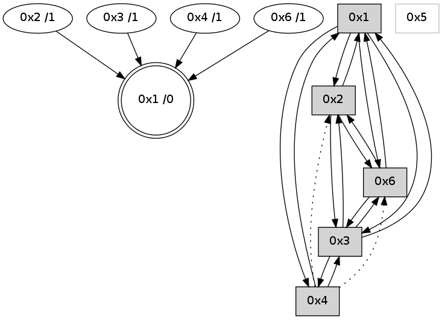

>> << IDX [start] -100 -25 -5 +0 +5 +25 +100 [670.400949001]
 Previous packets
665.017724 beacon03(adaf) #0 coord=01,02,05,03,04,06 cycle=432.0ms assoc 64 b2 c1
665.027724 beacon04(adaf) #0 coord=01,02,05,03,04,06 cycle=432.0ms assoc 64 14 eb
665.049432 [Hello(3): seq=465 sym=4,2,1,6 sysInfo= stat=4:10,0,3,0/2:0,0,0,0/1:1,0,7,0/6:14,0,3,0]
----------------------------------------------------------------------
665.479870 beacon01(adaf) #0 coord=01,02,05,03,04,06 cycle=432.0ms assoc
-- color-indic=0 64 94 37
665.489831 beacon02(adaf) #0 coord=01,02,05,03,04,06 cycle=432.0ms assoc 64 c5 c8
665.499831 beacon05(adaf) #0 coord=01,02,05,03,04,06 cycle=432.0ms assoc 64 63 e2
665.509832 beacon03(adaf) #0 coord=01,02,05,03,04,06 cycle=432.0ms assoc 64 ff c6
665.519831 beacon04(adaf) #0 coord=01,02,05,03,04,06 cycle=432.0ms assoc 64 59 ec
665.529833 beacon06(adaf) #0 coord=01,02,05,03,04,06 cycle=432.0ms assoc 64 2d f0
665.541568 [Hello(4): seq=467 sym=3,1 asym=6,2 sysInfo= stat=3:11,0,3,0/1:13,0,8,0/6:11,0,3,0/2:0,0,0,0]
665.544614 [Hello(1): seq=366 sym=2,4,3,6 sysInfo= stat=2:1,0,1,0/4:0,0,0,0/3:5,0,2,0/6:10,0,5,0]
----------------------------------------------------------------------
665.971978 beacon01(adaf) #0 coord=01,02,05,03,04,06 cycle=432.0ms assoc
-- color-indic=0 64 50 58
665.981939 beacon02(adaf) #0 coord=01,02,05,03,04,06 cycle=432.0ms assoc 64 01 a7
665.991938 beacon05(adaf) #0 coord=01,02,05,03,04,06 cycle=432.0ms assoc 64 a7 8d
666.001941 beacon03(adaf) #0 coord=01,02,05,03,04,06 cycle=432.0ms assoc 64 3b a9
666.011939 beacon04(adaf) #0 coord=01,02,05,03,04,06 cycle=432.0ms assoc 64 9d 83
666.021941 beacon06(adaf) #0 coord=01,02,05,03,04,06 cycle=432.0ms assoc 64 e9 9f
666.032932 [STC(1) #0.11 to-color d=0]
666.037291 [Hello(3): seq=466 sym=4,2,1,6 sysInfo= stat=4:10,0,3,0/2:0,0,0,0/1:2,0,7,0/6:15,0,3,0]
----------------------------------------------------------------------
666.464086 beacon01(adaf) #0 coord=01,02,05,03,04,06 cycle=432.0ms assoc
-- color-indic=0 64 1c e8
666.474047 beacon02(adaf) #0 coord=01,02,05,03,04,06 cycle=432.0ms assoc 64 4d 17
666.484047 beacon05(adaf) #0 coord=01,02,05,03,04,06 cycle=432.0ms assoc 64 eb 3d
666.494048 beacon03(adaf) #0 coord=01,02,05,03,04,06 cycle=432.0ms assoc 64 77 19
666.504047 beacon04(adaf) #0 coord=01,02,05,03,04,06 cycle=432.0ms assoc 64 d1 33
666.514050 beacon06(adaf) #0 coord=01,02,05,03,04,06 cycle=432.0ms assoc 64 a5 2f
666.525504 [Hello(1): seq=367 sym=2,4,3,6 sysInfo= stat=2:1,0,1,0/4:0,0,0,0/3:6,0,2,0/6:10,0,5,0]
666.529662 [Hello(4): seq=468 sym=3,1 asym=6,2 sysInfo= stat=3:12,0,3,0/1:14,0,9,0/6:11,0,3,0/2:0,0,0,0]
666.533291 [STC(2)->1 #0.11 to-color d=1]
666.537059 [STC(6)->1 #0.11 to-color d=1]
666.543062 [STC(4)->1 #0.11 to-color d=1]
----------------------------------------------------------------------
666.956194 beacon01(adaf) #0 coord=01,02,05,03,04,06 cycle=432.0ms assoc
-- color-indic=0 64 d8 87
666.966155 beacon02(adaf) #0 coord=01,02,05,03,04,06 cycle=432.0ms assoc 64 89 78
666.976154 beacon05(adaf) #0 coord=01,02,05,03,04,06 cycle=432.0ms assoc 64 2f 52
666.986155 beacon03(adaf) #0 coord=01,02,05,03,04,06 cycle=432.0ms assoc 64 b3 76
666.996155 beacon04(adaf) #0 coord=01,02,05,03,04,06 cycle=432.0ms assoc 64 15 5c
667.006156 beacon06(adaf) #0 coord=01,02,05,03,04,06 cycle=432.0ms assoc 64 61 40
667.017843 [Hello(3): seq=467 sym=4,2,1,6 sysInfo= stat=4:10,0,4,0/2:0,0,1,0/1:3,0,7,0/6:0,0,4,0]
----------------------------------------------------------------------
667.448301 beacon01(adaf) #0 coord=01,02,05,03,04,06 cycle=432.0ms assoc
-- color-indic=0 64 86 e6
667.458262 beacon02(adaf) #0 coord=01,02,05,03,04,06 cycle=432.0ms assoc 64 d7 19
667.468262 beacon05(adaf) #0 coord=01,02,05,03,04,06 cycle=432.0ms assoc 64 71 33
667.478262 beacon03(adaf) #0 coord=01,02,05,03,04,06 cycle=432.0ms assoc 64 ed 17
667.488264 beacon04(adaf) #0 coord=01,02,05,03,04,06 cycle=432.0ms assoc 64 4b 3d
667.498263 beacon06(adaf) #0 coord=01,02,05,03,04,06 cycle=432.0ms assoc 64 3f 21
667.509097 [Hello(1): seq=368 sym=2,4,3,6 sysInfo= stat=2:1,0,2,0/4:0,0,1,0/3:7,0,2,0/6:10,0,6,0]
667.513646 [Hello(4): seq=469 sym=3,1 asym=6,2 sysInfo= stat=3:13,0,3,0/1:14,0,9,0/6:11,0,3,0/2:0,0,0,0]
----------------------------------------------------------------------
667.940409 beacon01(adaf) #0 coord=01,02,05,03,04,06 cycle=432.0ms assoc
-- color-indic=0 64 42 89
667.950372 beacon02(adaf) #0 coord=01,02,05,03,04,06 cycle=432.0ms assoc 64 13 76
667.960370 beacon05(adaf) #0 coord=01,02,05,03,04,06 cycle=432.0ms assoc 64 b5 5c
667.970371 beacon03(adaf) #0 coord=01,02,05,03,04,06 cycle=432.0ms assoc 64 29 78
667.980372 beacon04(adaf) #0 coord=01,02,05,03,04,06 cycle=432.0ms assoc 64 8f 52
667.990371 beacon06(adaf) #0 coord=01,02,05,03,04,06 cycle=432.0ms assoc 64 fb 4e
668.002072 [Hello(3): seq=468 sym=4,2,1,6 sysInfo= stat=4:10,0,4,0/2:0,0,1,0/1:4,0,7,0/6:1,0,4,0]
----------------------------------------------------------------------
668.432516 beacon01(adaf) #0 coord=01,02,05,03,04,06 cycle=432.0ms assoc
-- color-indic=0 64 0e 39
668.442477 beacon02(adaf) #0 coord=01,02,05,03,04,06 cycle=432.0ms assoc 64 5f c6
668.452479 beacon05(adaf) #0 coord=01,02,05,03,04,06 cycle=432.0ms assoc 64 f9 ec
668.462478 beacon03(adaf) #0 coord=01,02,05,03,04,06 cycle=432.0ms assoc 64 65 c8
668.472479 beacon04(adaf) #0 coord=01,02,05,03,04,06 cycle=432.0ms assoc 64 c3 e2
668.482478 beacon06(adaf) #0 coord=01,02,05,03,04,06 cycle=432.0ms assoc 64 b7 fe
668.494216 [Hello(4): seq=470 sym=3,1 asym=6,2 sysInfo= stat=3:14,0,3,0/1:14,0,9,0/6:11,0,3,0/2:0,0,0,0]
668.497204 [Hello(1): seq=369 sym=2,4,3,6 sysInfo= stat=2:1,0,2,0/4:0,0,1,0/3:8,0,2,0/6:10,0,6,0]
668.500665 [STC(1) #0.12 to-color d=0]
----------------------------------------------------------------------
668.924624 beacon01(adaf) #0 coord=01,02,05,03,04,06 cycle=432.0ms assoc
-- color-indic=0 64 ca 56
668.934584 beacon02(adaf) #0 coord=01,02,05,03,04,06 cycle=432.0ms assoc 64 9b a9
668.944584 beacon05(adaf) #0 coord=01,02,05,03,04,06 cycle=432.0ms assoc 64 3d 83
668.954586 beacon03(adaf) #0 coord=01,02,05,03,04,06 cycle=432.0ms assoc 64 a1 a7
668.964586 beacon04(adaf) #0 coord=01,02,05,03,04,06 cycle=432.0ms assoc 64 07 8d
668.974586 beacon06(adaf) #0 coord=01,02,05,03,04,06 cycle=432.0ms assoc 64 73 91
668.986127 [STC(4)->1 #0.12 to-color d=1]
668.990170 [Hello(3): seq=469 sym=4,2,1,6 sysInfo= stat=4:10,0,4,0/2:0,0,1,0/1:5,0,8,0/6:2,0,4,0]
668.993934 [STC(3)->1 #0.12 to-color d=1]
----------------------------------------------------------------------
669.416733 beacon01(adaf) #0 coord=01,02,05,03,04,06 cycle=432.0ms assoc
-- color-indic=0 64 87 51
669.426693 beacon02(adaf) #0 coord=01,02,05,03,04,06 cycle=432.0ms assoc 64 d6 ae
669.436695 beacon05(adaf) #0 coord=01,02,05,03,04,06 cycle=432.0ms assoc 64 70 84
669.446694 beacon03(adaf) #0 coord=01,02,05,03,04,06 cycle=432.0ms assoc 64 ec a0
669.456695 beacon04(adaf) #0 coord=01,02,05,03,04,06 cycle=432.0ms assoc 64 4a 8a
669.466694 beacon06(adaf) #0 coord=01,02,05,03,04,06 cycle=432.0ms assoc 64 3e 96
669.478146 [Hello(1): seq=370 sym=2,4,3,6 sysInfo= stat=2:1,0,3,0/4:0,0,1,0/3:9,0,3,0/6:10,0,6,0]
669.482014 [Hello(2): seq=964 sym=6,1,3 sysInfo= stat=6:8,0,4,0/1:9,0,10,0/3:14,0,4,0]
669.483817 [Hello(4): seq=471 sym=3,1 asym=6,2 sysInfo= stat=3:15,0,4,0/1:15,0,10,0/6:11,0,3,0/2:0,0,0,0]
----------------------------------------------------------------------
669.908842 beacon01(adaf) #0 coord=01,02,05,03,04,06 cycle=432.0ms assoc
-- color-indic=0 64 43 3e
669.918802 beacon02(adaf) #0 coord=01,02,05,03,04,06 cycle=432.0ms assoc 64 12 c1
669.928802 beacon05(adaf) #0 coord=01,02,05,03,04,06 cycle=432.0ms assoc 64 b4 eb
669.938805 beacon03(adaf) #0 coord=01,02,05,03,04,06 cycle=432.0ms assoc 64 28 cf
669.948804 beacon04(adaf) #0 coord=01,02,05,03,04,06 cycle=432.0ms assoc 64 8e e5
669.958803 beacon06(adaf) #0 coord=01,02,05,03,04,06 cycle=432.0ms assoc 64 fa f9
669.970500 [Hello(3): seq=470 sym=4,2,1,6 sysInfo= stat=4:11,0,4,0/2:0,0,1,0/1:6,0,8,0/6:3,0,4,0]